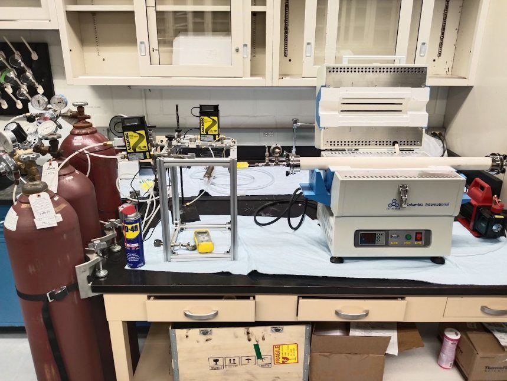

Welcome to our research home
Over the years, Dr. Okolie has acquired skills in catalyst development and process systems engineering, including process design and simulation, control and optimization, energy system modelling and life cycle assessment, and has collaborated with individuals and industrial partners on several research projects.
Our mission
The present society faces the challenges of increasing energy demand, climate change and environmental pollution. It is imperative to develop innovative processes that can transform waste materials into valuable resources for energy and environmental applications. Biofuels, biomaterials and green chemicals are envisioned to play a significant role in the global energy transition.
Our research combines experimental analysis with process design and simulation, control and optimization, energy system modelling and life cycle assessment to address several environmental and energy challenges.
- How can waste materials be effectively managed while providing adequate energy to meet the demands of the rising world population?
- How do you optimize the cost and efficiency of processes that can transform waste materials into energy and value-added products?
- How do you develop new materials to promote sustainable fuel, food security and human health?
What we work on

Waste to Fuels & Chemicals
Thermochemical conversion of biomass and waste into biofuels, hydrogen and green chemicals.
- Thermochemical conversion of biomass to biofuels
- Integrated chemical looping gasification (with Prof. Fatih Gulec, University of Nottingham)
- Design of a mobile pyrolysis unit
- Conversion of glycerol to value-added chemicals

Circular Materials & Critical Metals
Repurposing electronic waste and biomass into materials that capture carbon and clean water.
- Repurposing electronic waste and spent batteries for environmental applications
- Critical metals recovery
- Biochar, hydrochar and biobased materials for environmental remediation
- Catalysts for hydrogenolysis of lignin-based compounds (with Prof. Kausn Gunasooriya)

Hydrogen & Carbon Systems
Process and system models for the infrastructure of a low-carbon energy economy.
- Process modelling of carbon capture systems
- Modelling and process optimization of hydrogen production systems
- Underground hydrogen storage (with Dr. Emmanuel Epelle, UWS)
- Ni–Co–Fe catalysts for dry methane reforming (ACS-PRF funded)
Current projects
- AI-guided design of novel deep eutectic solvents for critical metal recovery from spent lithium-ion batteries (Bucknell IDEA Grant).
- GIS screening of suitable sites for spent alkaline battery upcycling to functional energy storage materials (Bucknell L&IT Summer Research Grant).
- Pathways for the recovery of lithium, nickel and cobalt from spent lithium batteries (Bucknell College of Engineering).
- Metal–support interactions and coke deposition mechanisms in Ni–Co–Fe catalysts for dry methane reforming (ACS Petroleum Research Fund, Jan 2027 – Dec 2028).
- Development of an integrated chemical looping gasification system (collaboration with Prof. Fatih Gulec, University of Nottingham).
- Conversion of glycerol to value-added chemicals.
- Underground hydrogen storage (collaboration with Dr. Emmanuel Epelle, UWS).
- Design of a mobile pyrolysis unit.
- Modelling and process optimization of hydrogen production systems.
- Catalyst development for catalytic hydrogenolysis of lignin-based compounds to sustainable chemicals (collaboration with Prof. Kausn Gunasooriya).
- Technology evaluation of waste biomass gasification to sustainable aviation fuel (industry grant, The Catalyst Group Resources).
Completed projects
- Hydrothermal gasification of waste materials for hydrogen production.
- Anaerobic digestion of food waste to biogas.
- Modelling and optimization of integrated biomass valorization processes.
- Process optimization and preliminary techno-economic analysis of glycerol to propylene glycol.
- Biopesticide production from food waste (collaboration with Prof. Burcu Gunes, DCU).
- Activated carbon functionalization for carbon capture.
- Production of activated carbon for energy storage applications.
- Catalyst development for the conversion of glycerol to propylene glycol (collaboration with Prof. Patrick Okoye).
- Development of a mobile game app for teaching introductory process engineering.
Methods
Patent
Adekunle A.A., Peter P. Ikubanni, Emmanuel, A., Olayinka O.A., Olarenwaju, O., Okolie, J.A., David A., Jamie K. Odusote. Locally designed and fabricated mini ablative pyrolyzer for dual energy products.